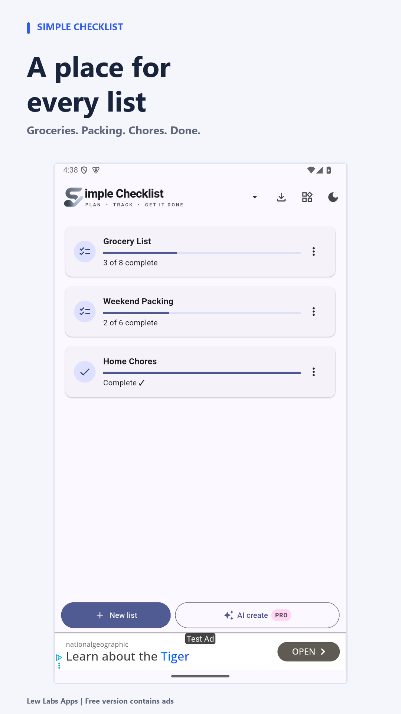
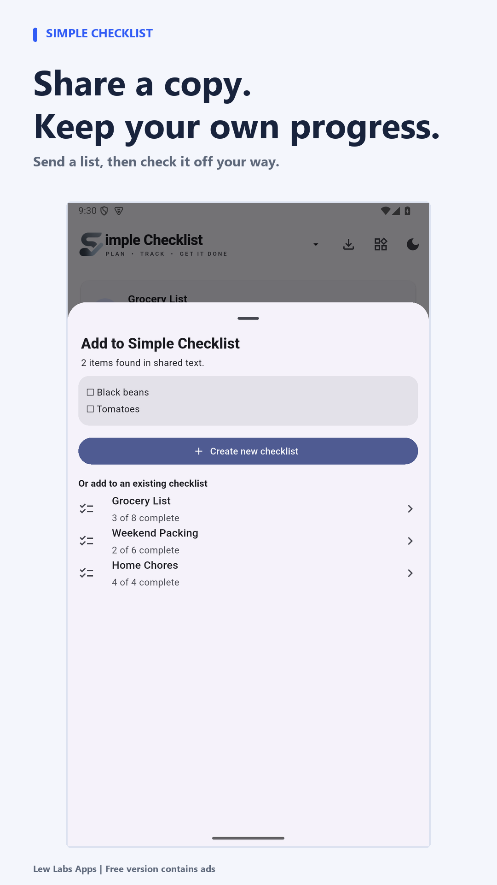

A little less
to remember.
Groceries, packing, projects, and everything in between. Keep the lists you use again and again close at hand.
Free core features · Contains ads · Available in the U.S.
Explore the upcoming ChatGPT handoff →
From a good idea
to a ready-to-use list.
A Free Simple Checklist plugin for ChatGPT is being tested privately and is not yet publicly listed in ChatGPT. When connected, it can prepare a link from checklist items in your conversation. The Android app already supports reviewing and importing this Free handoff. The plugin cannot see lists already on your phone or change them remotely.
1. Prepare a list
Ask ChatGPT for checklist items. The connected tool validates the suggestions and returns a link; it does not create a list in the app.
2. Open the link
Open the link on an Android device with a supported Simple Checklist version to reach an editable review. If it opens in a browser, see the handoff help below.
3. Choose and approve
Edit or leave out items, choose a new or existing list, then approve. Canceling leaves your lists unchanged.
There is no public plugin availability date yet. This handoff is Free and separate from Pro Scan a List and Describe a List. Checklist text in a handoff link is encoded, not encrypted, and links do not expire. Reopening asks for fresh approval and can add duplicate items; share links carefully.
Made for the lists you repeat.
Create a list, keep it handy, and use it again when the day calls for it.
Build it your way
Create multiple lists, check and uncheck items, add several items at once, and reorder lists or items.
Add without slowing down
Use voice add, import shared text or lists, and share a copy when someone else needs it.
Keep it in sight
Put a list on your Android home screen, switch a widget to another list, and choose a View / Sort layout.
Learn as you go
Start with the in-app Quick Tour, then use the Full App Tutorial or focused feature lessons.

Check off what is done, right from your home screen.
Simple Checklist screenshots
A closer look at everyday lists, the Android home-screen widget, sharing, and the list dashboard. Swipe through on a phone, or select any image to open it full size.



These graphics use real Android captures from a release-mode Free build with sample lists. Test ads appear in some captures. They do not show the ChatGPT plugin or Pro AI tools.
Watch the short app demos →Short Simple Checklist demos
Watch real Android actions: check off a home-screen widget, build a grocery list, and reset a list to use it again. These videos show everyday Free features, not the plugin or Pro AI tools.
Filmed in a test build with demo ads. The list and widget actions shown are real. Videos are silent and have on-screen captions.
AI Create, with you in control
The planned Pro tier removes banner ads and adds Scan a List and Describe a List. AI suggestions are reviewed before they become checklist items.
Scan a List
Take or choose a photo of a handwritten or printed list. AI reads it, then you edit and review the items before saving them to a new or existing list.
Describe a List
Hold to record, release, and review an editable transcript. Choose Make My List to generate checklist items, review them, then save to a new or existing list. You can also type instead of recording.
Pro subscriptions are planned and are not currently sold. Optional AI tools require a connection. Core checklist use does not require one. Availability and usage limits are shown in the app.
Privacy and terms
See what stays on your device, what optional services process, and the service terms.
Read Checklist privacy →Review Checklist terms →